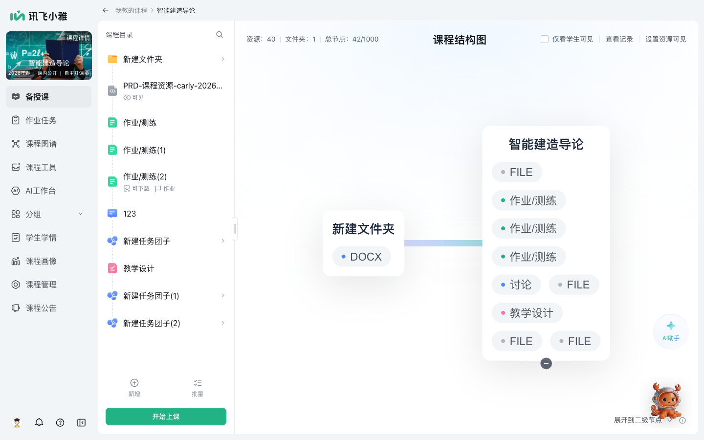
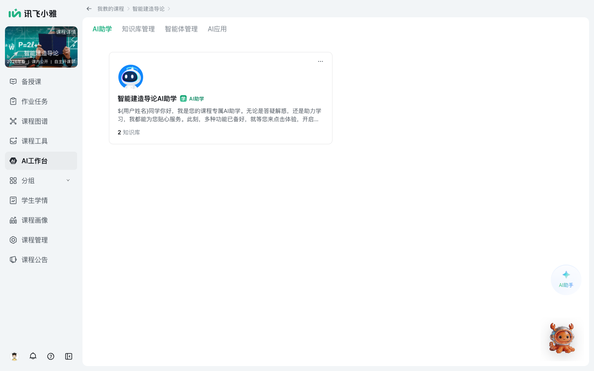
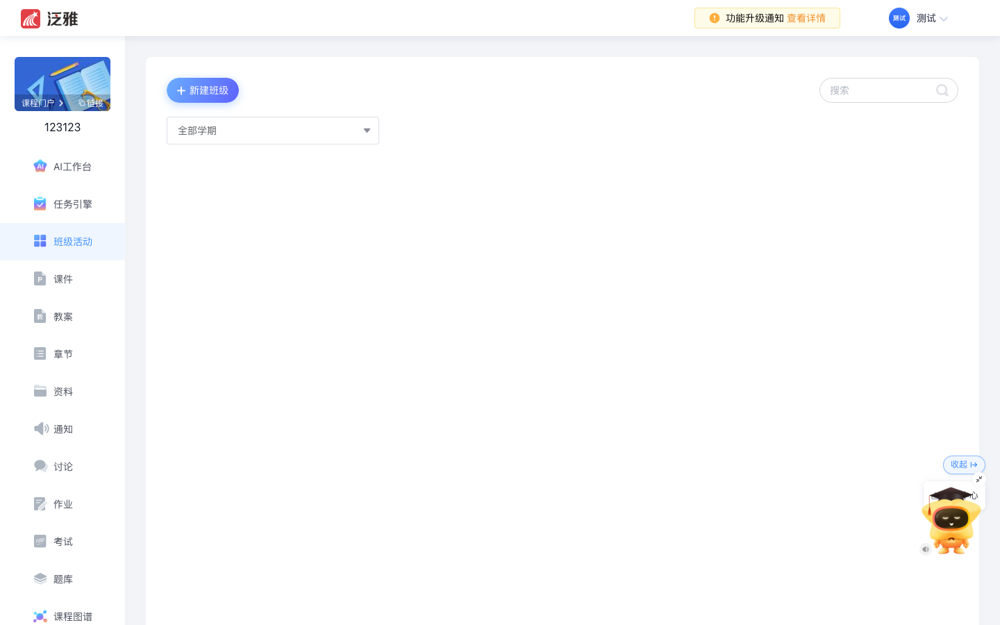
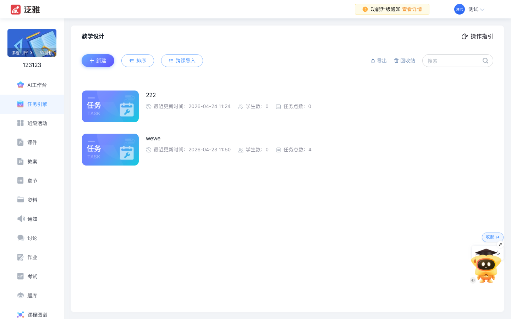
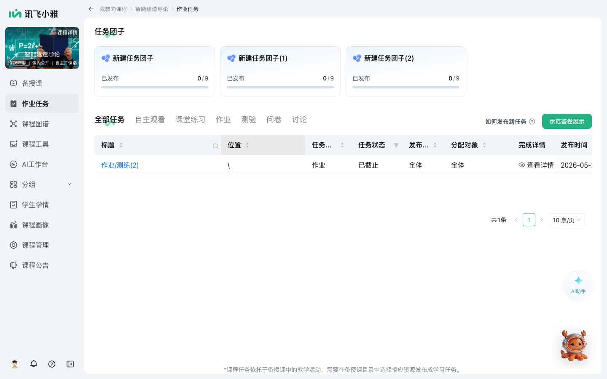
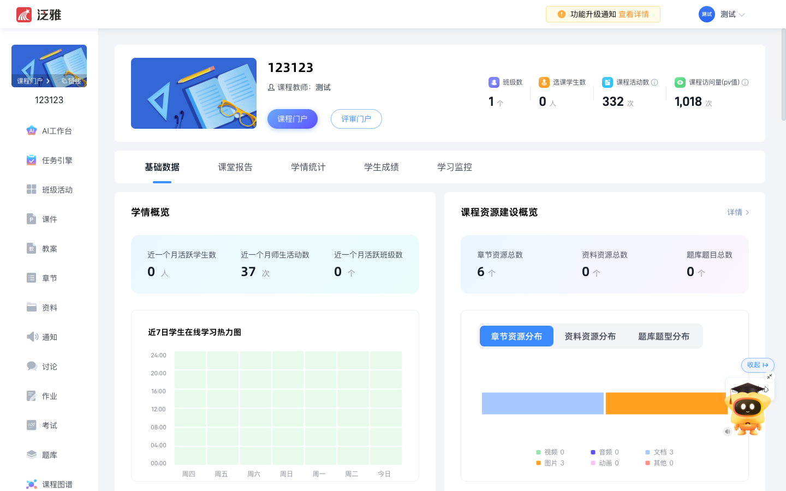
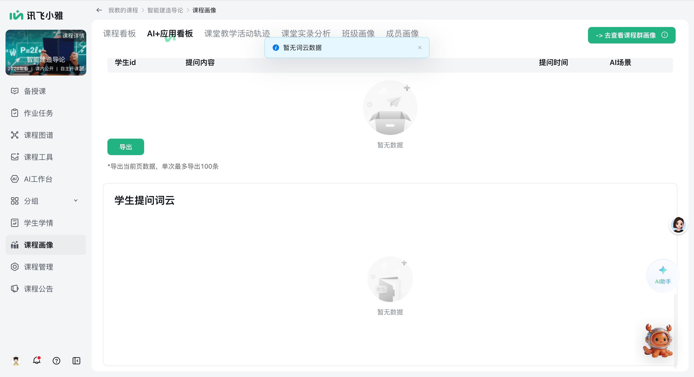
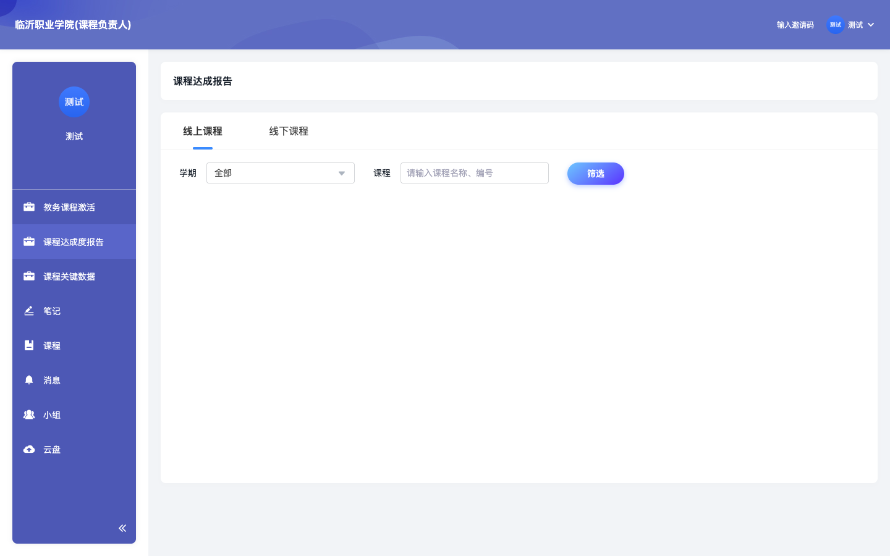
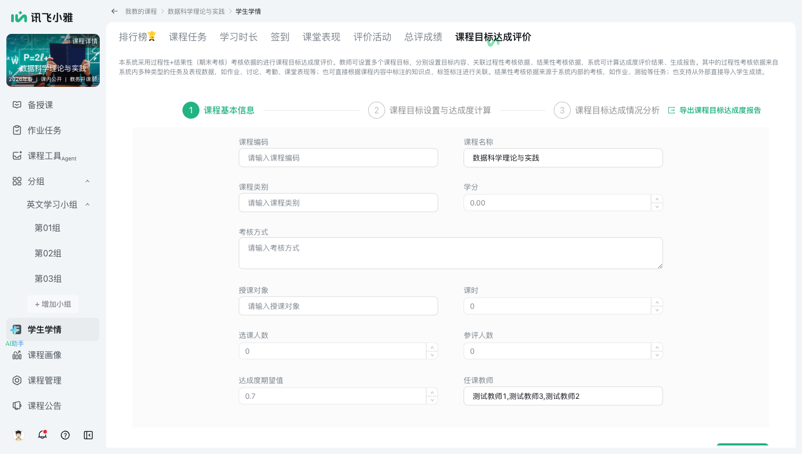
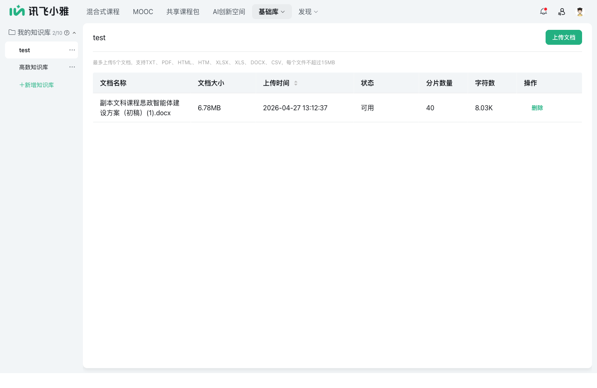

01 · 8 大核心能力双边对照
CORE 8
选取标准:这 8 条是产品哲学差异最大、销售上最容易被问到、决定平台定位的核心能力。其他 20+ 条次要能力放在第 02 章快速对照表。
1 · 课程默认页 · 入口哲学
❌ 形态差异显著
超星 · AI 接管入口
课程默认页直接是 AI 助教工作台。顶部 4 Tab(AI 助教 / AI 助学 / AI 运营 / AI 学情分析)+ 右侧 指令中心 6 条(我要查询 / 分析 / 生成 / 复习 / 练习 / 测验)。教师一进课程就被 AI 接管,AI 是入口而非附属
小雅 · 备授课入口
课程默认页是 备授课(课程结构图 + 资源 40 / 文件夹 1 / 总节点 42/1000)。AI 助手做成右下角浮窗,顶部独立菜单"AI 工作台"包含 4 子菜单(AI 助学 / 知识库 / 智能体 / AI 应用)。资源管理是入口,AI 是工具

课程默认 = 备授课结构图XY-01
产品哲学差异超星"AI-First":进课先见 AI,这是激进姿态(对应他们 2024-2025 押注汇雅大模型的战略);小雅"Tool-First":进课先见课,AI 是工具(对应他们"基础库 8 类资产"的资产沉淀哲学)。差异不分对错 — 超星更适合销售演示(AI-First 视觉冲击大),小雅更适合教师真实工作流(资源管理才是高频)。
2 · AI 工作台 / 指令中心
🟡 概念对应,形态不同
超星 · AI 工作台 + 指令中心
课程内独立菜单 "AI 工作台" 是 AI 能力聚合页。指令中心是右侧固定面板,6 条预制快捷指令一键触发
小雅 · AI 工作台 4 子菜单
课程空间内"AI 工作台"独立菜单,包含 4 子菜单:AI 助学 / 知识库 / 智能体 / AI 应用。无独立指令中心,但有 34 条 AI 指令库(在基础库层)

AI 工作台 · 4 子菜单XY-02
启示"指令中心"是把 AI 操作"快捷化"的产品包装。超星 6 条精选指令降低教师使用门槛;小雅 34 条丰富但没固定在显眼位置。小雅可以从 34 条里精选 6-10 条做成"常用指令"固定面板。
3 · 课程结构粒度 · 拆分 vs 统一
⭐ 超星拆得更细
超星 · 拆 3 独立菜单
把传统 LMS 拆成 课件(教学 PPT)+ 教案(教师备课记录)+ 章节(课程结构)3 独立菜单。反映行业惯例:教案是教学评估关键材料

教案(独立菜单)CX-03
小雅 · 统一备授课容器
"备授课"是统一容器:课程结构图 + 课程目录 + 文件夹 1 + 资源 40。无独立"教案"菜单 — 教案被视为资源之一
给小雅的启示"教案"是高校教学评估材料(申请课程、提交教学奖、参加教学比赛都要),独立菜单方便老师管理。建议小雅在"备授课"内加"教案"子分类,或独立菜单,对接高校教师日常工作。
4 · 任务引擎 · 跨课导入
❌ 小雅无独立"跨课复用"
超星 · 任务引擎 + 跨课导入
"任务引擎"独立菜单,卡片化任务管理。"跨课导入"按钮是亮点 — 把其他课的任务一键复用到当前课。+ 新建/排序/导出/回收站完整生命周期

任务引擎 · 跨课导入CX-04
小雅 · 作业任务 + 团子卡片
"作业任务"统一管理:已发布 / 草稿 / 全部任务 / 自主观看,任务团子卡片化。无明显"跨课导入"按钮 — 跨课程复用走"课程克隆"路径(粗粒度)

作业任务 · 任务团子XY-04
给小雅的启示"跨课导入"是真实高频场景(同一门课新学期重开 / 同主题课程互相借鉴)。小雅有"课程克隆"是粗粒度复用,缺细粒度的"任务/作业级跨课复用"。建议在"作业任务"加"跨课导入"按钮。
5 · 课程画像 · 看板 vs 6 视角
⭐ 小雅更深
超星 · 统计菜单
课程内独立"统计"菜单,提供课程运行数据(学生数 / 完成率 / 互动数等)。是单一看板,不是多视角

统计 · 课程运行数据CX-05
小雅 · 课程画像 6 视角
6 个独立视角:课程看板 / AI+应用看板(词云) / 课堂教学活动轨迹 / 课堂实录分析 / 班级画像 / 成员画像。每个视角独立子页,可下钻

课程画像 6 视角XY-05A
小雅 · 课程画像深度证据(6/5 婷婷手抓 4 张)

课堂教学轨迹XY-05B

班级画像XY-05C

成员画像XY-05D

AI 应用看板 + 词云XY-05E
小雅明确优势超星"统计"是单一看板,小雅"课程画像"是6 个独立视角各自深度。这是小雅可以对外讲的"亮点 1" — 类似"360 度学情画像"。建议销售在演示时把"6 视角"作为差异化锚点。
超星 · 校级独立报告
教师后台独立菜单"课程达成度报告" — 把 OBE 达成度做成校级报告形态。这是销售亮点 — 学校管理员视角的"达成度仪表盘"

课程达成度报告(校级)CX-06
小雅 · 嵌在学生学情
"学生学情 → 课程目标达成评价"是 OBE 入口,但未做成校级独立报告 — 教师视角内嵌

课程目标达成评价XY-06
给小雅的启示超星的 OBE 是"管理员可看"的校级报告,直接对接高校"金课申报"刚需。小雅有 OBE 数据,但缺管理员视角的独立报告 — 建议加一个"课程达成度报告(校级独立菜单)"。
7 · AI 知识库 · 课程级 vs 校级
🟡 维度不同
超星 · 课程级 AI 知识库
课程内独立菜单"AI 知识库"。新增知识库表单完整 + 召回参数设置(TopK / 阈值 / 排序)+ 知识库切片预览 + 自定义切片
小雅 · 校级基础库
"基础库 → 我的知识库"是教师 AI 资产跨课程沉淀。校级共建,而非课程级私有

基础库 · 我的知识库XY-07
设计哲学差异超星 = "课程级私有 AI 知识库"(教师为每门课分别建);小雅 = "校级 AI 资产沉淀"(教师建一次跨课程复用)。小雅设计更先进 — 但销售演示时容易被超星的"每课一个知识库"显得更"AI 化"。建议小雅强调"跨课程 AI 资产复用"是真实降本逻辑。
8 · 自研大模型 · 汇雅 vs 星火
❌ 品牌叙事差异
超星 · 汇雅大模型(教育垂类)
2024.11 北京网信办备案。售前 PPT P16 强调:研发 1500 人 / 算力投资上亿元 / 500 PFLOPS。明确"教育垂类大模型"品牌,对外讲技术故事方便
小雅 · 讯飞星火 + 多模型
讯飞星火本身是国内一线大模型(早期且强,场景适配丰富,语音能力国内第一)。AI 能力中心多模型接入(DeepSeek / 豆包 / 通义)。但未单独打"教育垂类"品牌
给小雅的关键启示超星的"汇雅"虽是后来者,但"教育垂类"品牌包装对学校采购方更有说服力。讯飞星火完全可以打"教育垂类版"(基于教育语料微调的星火变体),不需要技术新增,只需要品牌化。这是低成本高回报的对外叙事调整。
03 · 小雅独有发现(vs 超星)
XIAOYA UNIQUE
在双边对照中,发现小雅有超星没有的能力点 — 这是小雅的差异化资产,销售应主动讲。
小雅 · 5 大门户矩阵
首页 + 智慧慕课中心 + 共享课程中心 + AI 创新中心 + 专业全景中心 — 5 个一级菜单,从课程到专业到 AI 形成跨校 / 跨学科的内容生态。超星无同等门户矩阵

专业全景中心XY-U3
2 · 基础库 8 类资产(校级 AI 沉淀)
⭐ 小雅维度更全
小雅基础库 8 类资产
我的应用 / 知识库 / 智能体 / 数字人 / 题库 / 图谱库 / 量规库(评分规则)/ 文档 — "量规库"是超星没有的(评分规则化),"图谱库"是知识图谱专项库。跨课程复用

题库XY-U4a

智能体XY-U4c

数字人XY-U4d
3 · 课程画像 6 视角(再次强调)
⭐ 小雅更深
已在第 01 章 #5 详述。6 个独立视角 vs 超星 1 个统计看板,深度差距明显。这是销售对外讲"差异化亮点 1"。
课程工具内置"课程克隆"(从我教的课 / 从他人课克隆)+ "教学反思"(往期课程空间)超星暂无同等设计。这反映小雅"反思性教学"的产品哲学 — 高校教师真实需要。
5 · 灵动课堂 + AI 学习管家
⭐ 小雅独有(讯飞语音能力)
课堂号 + 二维码 + AI 学习管家(语音呼叫发起签到/投票/点名/抢答)+ 6 工具栏。超星无语音呼叫式 AI 助手 — 这是讯飞语音能力的天然集成,对方很难快速复制。
"评价活动"独立工具 + 配套"量规库"(评分规则化)超星暂无评分量规体系。对接 OBE 教学评估场景。
05 · 销售对外口径(直接可用)
STRATEGY
5.1 客户问"为什么不选超星"时的标准答复
销售口径 · 客观对照
承认体量:"超星在体量上确实是行业第一(2700 高校 / 13800 课程 / 3.18 亿人次),这是 14 年沉淀的护城河。"
差异化定位:"我们做的不是另一个超星,而是另一种教学产品哲学:超星把 AI 当作课程入口接管,我们把 AI 当作教师工作流的工具。学校选我们的真实理由是:
- 课程画像 6 视角 vs 超星 1 个统计看板 — 360 度学情画像,粒度到学生个体
- 基础库 8 类资产(含量规库)vs 超星课程级私有 — 校级 AI 资产跨课程复用,真实降本
- 5 大门户中心(智慧慕课/共享课程/专业全景/AI 创新/首页)vs 超星无门户矩阵 — 跨校跨学科生态布局
- 课程克隆 + 教学反思 + 量规库 — 反思性教学产品哲学,接高校教学评估场景
- 灵动课堂 + AI 学习管家(语音呼叫) — 讯飞语音独有能力,对方不可快速复制
5.2 客户问"超星有汇雅大模型,小雅有什么"时
销售口径 · AI 品牌
不回避:"汇雅是超星 2024.11 备案的教育垂类模型 — 这是好品牌包装。"
反向打:"讯飞星火本身是国内一线大模型,在教育语料和语音能力上有先发优势(我们做了 15 年教育 NLP)。星火覆盖的音视频/语音转写/情感识别/拍照搜题等能力,汇雅短期内无法对等。"
建议升级:下一版给小雅平台单独打"讯飞星火 · 教育垂类版"品牌(基于教育语料微调),这样品牌对位上不输超星。
5.3 客户问"超星已经合作了 N 所,你们怎么超越"时
销售口径 · 路径选择
承认:"我们承认超星在传统 LMS 沉淀(2700 所)上是规模碾压。"
差异路径:"我们走的是'AI 重塑教学过程'的路径,不是另一套 LMS。学校未来 3-5 年的真实痛点不是再买一个 LMS,而是:(1) 如何用 AI 升级现有教学(2)如何用 AI 数据驱动专业建设(3)如何用 AI 实现金课/精品课申报。这三件事,小雅课程画像 6 视角 / 基础库 8 类 / 5 大门户矩阵是更直接的方案。"
共存逻辑:"我们不是替代超星,而是叠加 — 学校可以保留超星作 LMS,但用小雅作 AI 升级层。两个并存是常见选择。"
5.4 4 个补齐建议(让小雅功能层不落后)
P1 补齐
- [P1] 独立"教案"菜单 — 备授课内加教案子分类。教案是教学评估关键材料,独立呈现方便老师
- [P1] "课程达成度报告"校级独立菜单 — 把现有 OBE 数据做成校级管理员视角的独立报告(对接高校金课申报)
- [P2] "跨课导入"按钮(作业任务级别) — 不只是粗粒度课程克隆,而是细粒度任务/作业级别复用
- [P2] "笔记"功能 — 课程内笔记菜单(学生 + 教师)
- [P3] "云盘"独立菜单 — 教师资源云存储